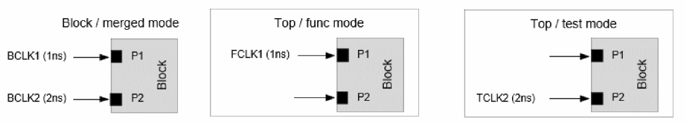
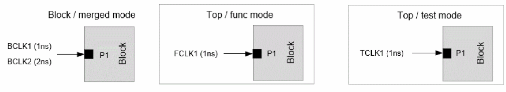
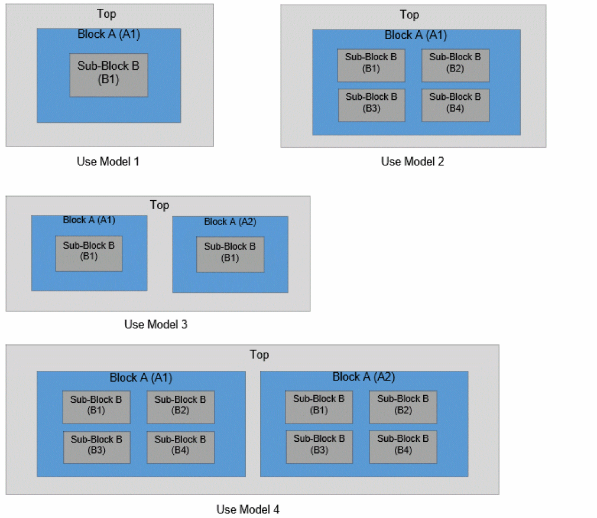
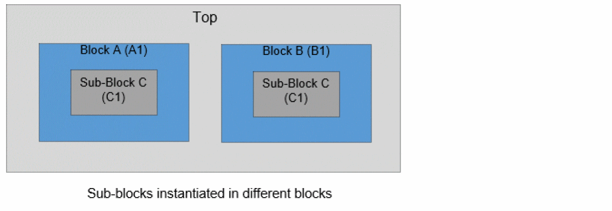
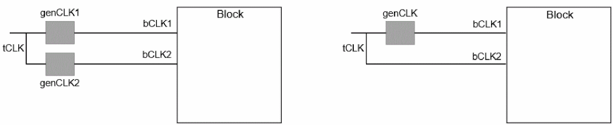
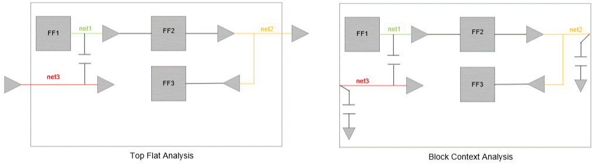
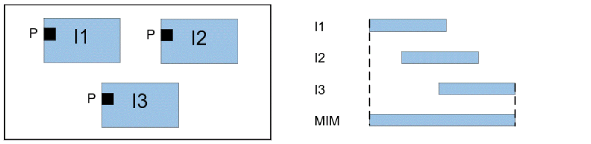

Merge Mode Context Analysis
When top level analysis is performed as SMSC analysis for each constraints mode (e.g., functional and test modes), but block analysis is performed using merged mode constraints, Tempus supports reading individual constraint mode contexts in merged mode context analysis. The merge mode context analysis is only supported with port-based clock mapping mode (when timing_context_port_based_clock_mapping is set to true).
The contexts corresponding to the multiple modes can be specified using the read_timing_context -merge parameter. The -view_map_file parameter should be used to provide mapping information of corresponding top/block views. You can map more than 2 top views (corresponding to the individual mode analysis) to the same block view (corresponding to merged mode analysis). See example below:
read_timing_context -merge {top_testmodeview.context top_funcmodeview.context} -view_map_file view_map.tcl
The contents of view map file view_map.tcl are shown below:
set_timing_context_view_mapping -top_view top_funcmodeview -block_view block_mergedmodeview
set_timing_context_view_mapping -top_view top_testmodeview -block_view block_mergedmodeview
top_testmodeview.context is context corresponding to top level test mode view, and top_funcmodeview.context is context corresponding to top level functional mode view.
Both the functional and test mode clocks are expected to be retained in the merged mode block constraints (even if the clocks are defined on the same port). The physically exclusive clock group specification is needed between functional and test mode clocks in merged mode block constraints to ensure correlation to flat analysis.
The merged mode context analysis is supported with both SMSC and MMMC block/top level analysis.
set_timing_context_view_mapping set_timing_context_view_mapping command must be specified in a view mapping file and subsequently loaded into the Tempus environment using the following command:read_timing_context - view_map_file <file>
This command should not be executed as a separate command without enclosing it in the mapping file.
Clock Mapping Approach
The block clocks defined on a port will be attempted to map to top clocks (from top level modes on the same port) using port-based clock mapping approach. The clock mapping approach will be the same for both clock and data phases.
As shown in the example below, the top clock FCLK1 will be mapped to block clock BCLK1 at port P1 and TCLK2 will be mapped to BCLK2 at port P2.

If a block clock at a port can be mapped to top clocks from multiple top level modes, this block clock will remain unmapped, as shown in the figure below.

In this case, the block clocks BCLK1/BCLK2 and top clocks FCLK1/TCLK1 will remain unmapped at port P1.
The manual clock mapping can be specified in case the clocks are not auto mapped. The manual mapping allows mapping top clocks from different modes to the block clock. In the above example, the block clocks BCLK1/BCLK2 can be manually mapped to top clocks FCLK1/TCLK1.
In some of the merged mode constraints, the block clock names can have unique suffix to indicate the top level mode the clock corresponds to. Tempus allows specification of suffix for block clock names using the -block_clock_suffix parameter as shown below:
set_timing_context_view_mapping -top_view testview -block_view blockview -block_clock_suffix "_test"
set_timing_context_view_mapping -top_view funcview -block_view blockview -block_clock_suffix "_func"
The block clocks with clock suffix _test will only be mapped to top clocks from testview and block clocks with clock suffix _func will only be mapped to top clocks from funcview.

In the above case when _func and _test suffix is specified, the BCLK1_func will be mapped to FCLK1 and BCLK1_test will be mapped to TCLK1.
When a suffix is user-specified, and if some block clocks do not have the specified suffix, then those block clocks without the suffix will remain unmapped.
The case value from the top level contexts will be retained on a port only if the case value matches for all the top level modes. The case value will be dropped in context analysis if there is a mismatch in case value.
Glitch Analysis with Timing Context
Tempus Timing Context analysis has the capability to accurately model the top level glitch that propagates to the block. Thus, top level glitch on the receiver pin of block input boundary nets can be replicated in block context analysis for accurate glitch propagation. In case of MIM, the worst glitch across all the instances is preserved in the Context.
Querying Context Data on Ports
Tempus supports querying context information on a port using the context_data object. The context_data object can be used to fetch properties like mapped top and block clocks. This is supported only with port-based clock mapping enabled, when timing_context_port_based_clock_mapping is set to true).
The below steps can be used to query context properties using the get_property context_data object:
Step 1: Create a collection of context_data objects for the specified port. The context_data object can be used for a single port only. An error will be issued if multiple ports are specified.
set CD [get_property [get_ports A] context_data]
The above command will return a collection of context data objects for the default view, each corresponding to a top level instance and top view. If there are 3 top instances (h1, h2, h3), and 3 top views (tv1, tv2, tv3), then the size of a context_data collection will be shown as 9.
Step 2: Query different properties on the above created collection of context_data objects. The following properties are supported with the context_data object:
| Property | Command | Output |
|---|---|---|
To report properties for a particular view, the filter_collection command can be used.
get_property [filter_collection $CD top_view=="tv1"] mapped_top_clocks
This command will return the top clocks for all the instances of top view tv1.
Similarly, to report properties for a particular view and particular instance, you can use the following command:
get_property [filter_collection $CD top_view=="view1" && top_instance=="h1"] mapped_top_clocks
This command will return the top clocks for top view tv1 and instance h1.
If you want to report the top clocks that are mapped to a particular block clock only, then you can use the get_property -clock parameter, as shown below:
get_property [filter_collection $CD top_view=="view1" && top_instance=="h1"] mapped_top_clocks -clock bc1
This command will return the top clocks for view tv1 and instance h1, that are mapped to the block clock bc1. The context_data object can be generated for one block view only, either the one passed using the -view parameter or the default one used by the get_property command. If the properties of context_data are fetched for a different view, an error will be issued as shown below:
set CD [get_property [get_ports A] context_data] -view view1 get_property $CD top_view -view view2
=> ERROR: Context data is not generated for block view 'view2'
Generating Context Clock Mapping Report
Tempus generates the clock mapping report during the read_timing_context by default. Tempus supports report_timing_context_clock_mapping command to generate a clock mapping report after read_timing_context command is run. The report_timing_context_clock_mapping command supports generating clock mapping report in either text or CSV format. The CSV format helps in easier post-processing of the report.
You can use the -format csv option to generate the mapping report in CSV format. Below is an example of a CSV report:
# View V1
# Inst I1
# Block Clock, Block Clock Period, Block Clock Waveform, Top Clock, Top Clock Period, Top Clock Waveform, Port, Comment
# Block clocks mapped to top clocks on clock pins/ports:
BCLK1, 10, {0 5}, TCLK1, 10, {0 5}, CPORT1, auto mapped
BCLK2, 10, {0 5}, TCLK2, 20, {0 10}, CPORT2, user mapped
# Block Clocks NOT Mapped to top clocks on clock pin/ports:
BCLK3, 10, {0 5}, NA, NA, NA, CPORT3, No possible match by parameter
# Top clocks NOT mapped to block clocks on clock pins/ports:
NA, NA, NA, TCLK3, 10, {0 5}, CPORT4, No possible match by parameter
# Virtual block clocks NOT mapped to top clocks:
VCLK1, 10, {0 5}, NA, NA, NA, NA, NA
# Block clocks mapped to top clocks on data ports:
VCLK2, 10, {0 5}, TCLK4, 10, {0 5}, DPORT1, auto mapped
# Block clocks NOT mapped to top clocks on data ports:
VCLK2, 10, {0 5}, NA, NA, NA, DPORT2, No possible match by parameter
# Top clocks NOT mapped to block clocks on data ports:
NA, NA, NA, TCLK5, 10, {0 5}, DPORT3, No possible match by parameter
Context Comparison
Tempus supports comparison of two timing contexts using the compare_timing_context command. The contents of context, such as, clocks, clock latency, arrival time, required, slew, load, constant and glitch, can be compared. To perform context comparison, it is required to generate a context using the write_timing_context -include_text_format command.
Context Comparison Report
The context comparison report has the following sections:
This section gives the summary of total and failed entries/ports in reference and target context comparison. The header contains the view, module, and instance for which the comparison is reported.
------------------------------------------------
Top View: view1
Module: Top
Top Instance: inst1
------------------------------------------------
--------------------------------------------------------------------------------
Comparison Summary
--------------------------------------------------------------------------------
Section Failed Entries Total Entries Failed Ports Total Ports
Clocks 0 1 0 0
Constant Value 0 3 0 3
Latency 48 48 2 2
Arrival Time 0 0 0 0
Required 0 0 0 0
Input Transition 0 12 0 3
Output Load 0 4 0 1
Glitch 2 8 1 3--------------------------------------------------------------------------------
Section 2: Detailed Clock Comparison
This section provides the details of differences in clock definitions between the reference and target contexts.
---------------------------------------------------------------------------------
Clocks Comparison
--------------------------------------------------------------------------------
Clock Ref Waveform Ref Period Target Waveform Target Period Status
--------------------------------------------------------------------------------
CK1 [0 0.000 0.500] 1.000 [0 0.000 0.500] 1.000 Pass
--------------------------------------------------------------------------------
Section 3: Detailed Constant Value Comparison
This section provides the details of differences in constants between the reference and target contexts.
--------------------------------------------------------------------------------
Constants Comparison
--------------------------------------------------------------------------------
Port Ref Constant Target Constant Status
--------------------------------------------------------------------------------
prt1 0 1 Fail
---------------------------------------------------------------------------------
Section 4: Detailed Clock Latency Comparison
This section provides the details of differences in clock latency, pin-based uncertainty and incremental delays between the reference and target contexts
--------------------------------------------------------------------------------
Clock Latency Comparison
--------------------------------------------------------------------------------
Port Clock Type Data Ref Target Abs Diff %Diff Status
--------------------------------------------------------------------------------
P1 TCK1(P) latency early_rise 10.12 10.23 0.11 1.08 Fail
P1 TCK1(P) incr_delay early_rise 0.2 0.2 0 0 Pass
P1 TCK1(P) uncertainty early_rise 0.1 0.2 0.1 100 Fail
P1 TCK1(P) latency late_rise 11.1 11.12 0 0 Pass
---------------------------------------------------------------------------------
Section 5: Detailed Input Arrival Comparison
This section provides the details of differences in input arrivals between the reference and target contexts
--------------------------------------------------------------------------------
Input Arrival Comparison
-------------------------------------------------------------------------------
Port Clock Data Ref Target Abs Diff %Diff Status
--------------------------------------------------------------------------------
test_scanpt portclk1(P) early_rise 1206.32 1214.33 8.0017 0.6633 Fail
test_scanpt portclk0(P) early_rise 1206.32 1214.33 8.0017 0.6633 Fail
test_scanpt portclk1(P) early_fall 1202.58 1210.53 7.9497 0.6610 Fail
test_scanpt portclk0(P) early_fall 1202.58 1210.53 7.9497 0.6610 Fail
--------------------------------------------------------------------------------
Section 6: Detailed Required Time Comparison
This section provides the details of differences in required time between the reference and target contexts.
--------------------------------------------------------------------------------
Required Time Comparison
--------------------------------------------------------------------------------
Port Clock Data Ref Target Abs Diff %Diff Status
---------------------------------------------------------------------------------
tst_snopt ekph1(P) early_fall 4.2486 3.2270 -1.0216 -24.0456 Fail
tst_snopt ekph1(P) early_rise -5.9780 -7.0736 -1.0956 18.3272 Fail
tst_snopt emph1(N) early_fall -13.8087 -15.9599 -2.1512 15.5786 Fail
tst_snopt emph1(N) early_rise -23.0335 -25.2794 -2.2459 9.7506 Fail
---------------------------------------------------------------------------------
Section 7: Detailed Input Port Transition Comparison
This section provides the details of differences in transition times on input ports between the reference and target contexts.
Input Transition Comparison
--------------------------------------------------------------------------------
Port Data Ref Target Abs Diff %Diff Status
--------------------------------------------------------------------------------
clk2 early_rise 1.510 1.510 0.000 0.000 Pass
clk2 early_fall 0.772 0.772 0.000 0.000 Pass
---------------------------------------------------------------------------------
Section 8: Detailed Output Port Load Comparison
This section provides the details of differences in output port load between the reference and target contexts.
Output Load Comparison
--------------------------------------------------------------------------------
Port Data Ref Target Abs Diff %Diff Status
-------------------------------------------------------------------------------
Out early_rise 171.374 171.374 0.000 0.000 Pass
Out early_fall 171.374 171.374 0.000 0.000 Pass
--------------------------------------------------------------------------------
Section 9: Detailed Glitch Comparison
This section provides the details of differences in glitch value on the pins connected to the input ports between the reference and target contexts.
--------------------------------------------------------------------------------
Glitch Comparison
--------------------------------------------------------------------------------
Port Pin Name Data Ref Target Abs Diff %Diff Status
-------------------------------------------------------------------------------
clk2 ff3/CK VH 96.552 96.611 0.059 0.061 Fail
clk2 ff3/CK VL 95.742 95.776 0.034 0.036 Fail
---------------------------------------------------------------------------------
Context Generation from Context Analysis
In a three-level hierarchical design, Tempus supports the following nested context analysis flow to perform sub-block B context analysis:
- Generate context for block A from top-level analysis
- Perform block A context analysis and generate context for sub-block B
- Perform sub-block B context analysis
A nested context analysis flow is shown in the figure below:


This analysis is supported with more than 3 levels of hierarchy also. The Top and Block A analysis can also be Top+BM analysis.Tempus supports below use-models of nested context flow:
| Use Model | Top | Block | Sub-Block |

In the above figure, when context data is generated for the sub-block B (from block A context analysis), separate context data is generated for each instance of the sub-block (with respect to Top). In use model 4, separate context data is generated for A1/B1, A1/B2, A1/B3, A1/B4, A2/B1, A2/B2, A2/B3, A2/B4. The MIM clustering check will be done for all these sub-module instances during both sub-module context generation and analysis.
The user-interface for context generation and reading is the same as regular context analysis. The only difference is that full instance name (with respect to Top level) needs to be specified for the -instance parameter during sub-module context analysis for both write_timing_context and read_timing_context commands.
Tempus also supports nested context analysis flow in the case where the same sub-block is instantiated in different blocks as shown in the figure below.

In this case, the sub-module context for instances A1/C1 and B1/C1 will be generated from block A and block B context analysis respectively. The contexts of instances A1/C1 and B1/C1 can be specified with the read_timing_context -merge command to perform MIM context analysis.
Context Jitter Handling
This section talks about the clock source jitter handling in timing context analysis. In regular STA analysis, the generated clocks inherit the jitter values from their master clocks wherever explicit edge relationship is established. When such clocks sharing common master reach a block port, these clocks may be defined as master clocks in block constraints. This can lead to mis-correlation between flat and block STA, as a flat run will use the jitter values for timing paths between these related clocks, while in block run there is no way to specify jitter between two master clocks.
Consider the following examples:

In the first example, the two generated clocks of the same master enter the block. A flat STA run will use the inherited jitter values for paths between genCLK1 and genCLK2 inside the block, while block STA run will define these as two master clocks (bCLK1 and bCLK2), and hence, no jitter can be specified between these clocks in block STA. To address this problem, hierarchical timing context stores each clocks’ edge relationship to the root clock edge and the corresponding jitter value. During block context analysis, full- or half-cycle jitter is applied based on the master edge relationship for launch and capture clocks.
Jitter stored in context overrides the jitter specified in block constraints for clocks defined on block ports.
Multiple Top Clocks to Block Clock Mapping
If all the multiple top mapped clocks have the same clock root approach for jitter application as 1-to-1 mapped clocks, the clock edge mapping will be required between top root clock and block clock.
If some of these top mapped clocks do not share common clock root, Tempus will worst-case half- or full-cycle jitter value and use it for the block clock. The half- or full-cycle jitter decision will be based on which edges of the block clock and its generated clocks are used in the timing path at the block level. The jitter is not applied when there is no missing edge mapping between top and block clock.
Consider the examples in the following table for more details, where:
- TC1, TC2 are top level root clocks.
-
BCK1, BCK2 are block level root clocks.
Case Interacting Clock Domains Jitter Application Edge Mapping Block Clocks Top Root Clocks
- Timing path being analyzed has both launch and capture clocks as a generated clock of BCK1 at block
- Block clock BCK1 is mapped to a generated clock of top clock TC1
- Timing path being analyzed has launch and capture clocks as generated clocks of BCK1 and BCK2 respectively at block
- Block clock BCK1 is mapped to generated clocks of both top clocks TC1 and TC2
- Block clock BCK2 is mapped to generated clocks of both top clocks TC1 and TC2
- BCK1 and BCK2 have same clock waveforms.
- Worst of TC1 and TC2 jitter values will be applied if BCK1 and BCK2 have same clock waveform.
- Full-cycle/half-cycle jitter will be applied based on BCK1 edge mapping
Pushdown Block SDC Generation
Tempus supports pushdown block SDC generation from top-level timing analysis. To generate block SDC from top-level timing analysis, you can specify the write_timing_context -with_constraints parameter.
Currently, block SDC generation is supported only for a single instance of a block. In case of multiple instantiated (MIM) blocks, the write_timing_context -instances parameter is mandatory to specify the instance for which the block SDC is to be generated. The block SDC generation from DSTA is not supported.
When the -with_constraints parameter is specified, Tempus generates SDC for the specified modules and instances. The SDC is stored inside the context directory <context dir>/<module>/<module>.<constraint mode>.sdc.
The block SDC does not contain data present in the regular block context database, such as, input/output delay, clock latency, or interface path exceptions. So this block SDC can be used only along with the context in context analysis and not in standalone block STA.
The block SDC stored in context is not automatically read during the read_timing_context command run, so the block SDC should be read explicitly.
Clock Constraints in Pushdown Block SDC
All the block internal clocks are written in block SDC. Apart from block internal clocks, the below clocks definitions are also written:
-
Any top-level generated or regular clock that reaches the block ports is modeled as a source clock (
create_clock) on the block port (with the same name as top-level clock). - Any top-level clock that reaches the block only as data is modeled as a virtual clock (with the same name as top-level clock).
- If the same clock enters multiple ports it is defined on all these ports.
The block SDC also contains set_clock_group, clock-to-clock exception, uncertainty, or jitter for the above clocks. The clock latency is written only for the block internal clocks.
Pushdown Block SDC Details
This section talks about commands that are part of pushdown block SDC during context analysis and those which are not.
Below are the constraints that are written in pushdown Block SDC:
-
Global constraints like
set_min_pulse_width 1.0 - Constraints that have block pins and block clocks. For example,
The valid block constraints after filtering top-level objects from the constraints. For example:
-
set_false_path -through {<toplevel pin> <block internal pin>} -through {<toplevel pin> <block internal pin>}will be written asset_false_path -through <block internal pin> -through <block internal pin>in block SDC.
The constraints like set_path_adjust_group and set_path_adjust related to block pins are also written in a separate file <context dir>/<module>/<module>.pathadjust.sdc.
The following path adjust constraints are written in pushdown SDC:
-
When clocks are in -from/-to options like
set_path_adjust_group -from [get_clocks TP1]... -
When block internal pins in -from/-to options like
set_path_adjust_group -from [get_pins <block internal pin>] -to [get_pins <block internal pin>]...
The following path adjust constraints are not written in pushdown SDC (but, captured in context):
-
Mix of block internal and top level pins in -from/-to options like
set_path_adjust_group -from [get_pins <toplevel pin>] -to [get_pins <block internal pin>]... - Path group information is written in separate file <context dir>/<module>/<module>.pathgroup.sdc.
- Timing derates <context dir>/<module>/<module>.<delay_corner>.timingderate.sdc
The below constraints are not written in pushdown Block SDC since these are captured in the context:
-
set_input_delay/set_output_delay on the ports - Propagated case values on the ports
-
set_input_transition/set_driving_cell/set_load on the ports -
Constraints that have pins both inside and outside block. E.g,
set_false_path -through <toplevel pin> -through <block internal pin> - Clock latency for the clocks created on the ports (except for the block internal clocks)
-
set_dont_touch,set_dont_usecommands. - DRV constraints are not derived on the block ports / module
Pushdown SDC is also supported in C-MMMC analysis:
- Pushdown SDC is written for all active constraints modes
-
set_timing_derateis written for all active delay corners -
set_path_adjustis written for all active views
Context Data Reporting
You can use the report_timing_context_data command for context data reporting.
-View: func_setup_view1
-Instance: core_0
-Port: pclk, Direction: IN
-Sink pin: p/I
----------------------------------------------------------------------------
Type Block Clock Top Clock Early Late Early Late
Rise Rise Fall Fall
-------------------------------------------------------------------------------
latency coreclk coreclk 183.467 197.769 176.540 191.023
incr_delay coreclk coreclk -0.700 0.700 -0.600 0.700
uncertainty coreclk coreclk 0.025 0.025 -0.025 0.025
-------------------------------------------------------------------------------
-View: func_setup_view2
-Instance: core_0
-Port: coreclk, Direction: IN
-Sink pin: c/I
----------------------------------------------------------------------------
Type Block Clock Top Clock Early Late Early Late
Rise Rise Fall Fall
---------------------------------------------------------------------------------
latency coreclk coreclk 95.703 109.052 88.904 101.234
incr_delay coreclk coreclk -1.300 1.400 -1.200 1.200
uncertainty coreclk coreclk 0.025 0.025 -0.025 0.025
---------------------------------------------------------------------------------
-View: func_setup
-Instance: core_0
-Port: coreclk, Direction: IN
-Sink pin: c/I
--------------------------------------------------------------------------------
Type Block Clock Top Clock Early Late Early Late
Rise Rise Fall Fall
--------------------------------------------------------------------------------
uncertainty pclk pclk 0.025 0.025 -0.025 0.025
---------------------------------------------------------------------------------
SIM Flow Examples
Example 1: This example illustrates how to read and write Timing Context for SIM.
Consider a top level design with six submodules - A, B, C, D, E & F - with multiple hierarchy levels as illustrated in the figure below.

Below command will write the context of all the instances - A, B, C, D, E & F in a single step without any significant memory/runtime overhead.
write_timing_context context.db -module {A B C D E F}
The -skip_interface_paths parameter is not mandatory since all the modules have only one instantiation at top level. This should be used only if you want to use Timing Context to perform the timing analysis on reg-reg paths only.
The command will create 6 subdirectories named A, B, C, D, E & F inside context.db to write the context of corresponding module within each sub directories.
Since the write_timing_context command triggers a timing update, the command can replace update_timing in the run scripts.
read_libs <>
read_verilog 'Top.v A.v B.v C.v D.v E.v F.v'
set_top_module Top
read_spef <>
read_sdc <>
write_timing_context context.db -module {A B C D E F}
report_timing
The read_timing_context command must be issued after loading the block constraints. The context data of required module will be automatically fetched from the corresponding sub-directory within context.db when the read_timing_context command is issued.
Sample Block Script for Block A:
read_libs <>
read_verilog 'A.v'
set_top_module A
read_spef <>
read_sdc context.db/A/A.sdc
read_timing_context context.db
report_timing
MIM Flow Examples
Example 1: The following example illustrates how to read and write Timing Context for reg-reg analysis of MIM modules.
Consider a top-level design with two modules -
- Module A with 3 instances A1, A2 and A3 - all belong to single cluster
-
Module B with 3 instances B1, B2 and B3 - B1/B2 belong to one cluster, B3 belong to another cluster.

- Writing Timing Context from Top STA
Below command will write the context data for all the instances - A1, A2, A3, B1, B2, B3 in a single step.
write_timing_context context.db -module {A B}
You have the flexibility to perform Context timing analysis for single or multiple instances of the modules using same Timing Context.
-
Block A STA with Timing Context
The following reg-reg timing analysis can be performed for module A using the generated context.db-
Block Context Analysis for instance A1 only -
read_timing_context context.db -instances A1 -
Block Context Analysis for instance A2 only -
read_timing_context context.db -instances A2 -
Block Context Analysis for instance A3 only -
read_timing_context context.db -instances A3 -
Block MIM Context Analysis for instances A1 & A2 -
read_timing_context context.db -instances {A1 A2} -
Block MIM Context Analysis for instances A2 & A3 -
read_timing_context context.db -instances {A2 A3} -
Block MIM Context Analysis for instances A3 & A1 -
read_timing_context context.db -instances {A3 A1} -
Block MIM Context Analysis for instances A1, A2 & A3 -
read_timing_context context.db -instances {A1 A2 A3}
or
read_timing_context context.db
-
Block Context Analysis for instance A1 only -
-
Block B STA with Timing Context
The following reg-reg timing analysis can be performed for module B using the generated context.db-
Block Context Analysis for instance B1 only -
read_timing_context context.db -instances B1 -
Block Context Analysis for instance B2 only -
read_timing_context context.db -instances B2 -
Block Context Analysis for instance B3 only -
read_timing_context context.db -instances B3 -
Block MIM Context Analysis for instances B1 & B2 -
read_timing_context context.db -instances {B1 B2}
-
Block Context Analysis for instance B1 only -
Example 2: This example illustrates how to read and write Timing Context for selected instances of design mentioned in example1.
-
Writing Timing Context from Top STA
Context generated for selected instances if blocks A and B. Examples - -
Block A STA with Timing Context
The following timing analysis (reg-reg + IO) can be performed for module A using the above generated context. -
Block B STA with Timing Context
The following timing analysis (reg-reg + IO) can be performed for module B using the above generated context.
Example 3: This example illustrates the incorrect use of write_timing_context and read_timing_context commands for the design mentioned in example1.
The following context reading commands will error out because B3 is in a different cluster that B1 and B2-
The following context writing commands will error out because module names of all the instances provided with -instance option are not specified under -module option
Sources of Inaccuracy in Context Analysis
Inaccuracy Due to Boundary Parasitics
The distributed parasitic of top-level portion of the input/output interface nets are lumped in block context analysis. This may result in inaccuracy during timing as well as glitch analysis with Context. Two types of nets will be impacted because of this:
Example: net1 in below figure has coupling with net3. Since net3 is an interface net, during Top flat STA, its parasitics are distributed across Top and Block. However, in block context analysis, top portion of the net3 will not be present. Because of this, aggressor net3 will have different SI impact on net1 in Top Flat vs Block Context Analysis.
Example: net2 in below figure is part of reg-reg path (FF2-FF3) and it also fanout to the top level instances. In Top Flat STA, net2 will have parasitics distributed across Top and Block. However, in Block Context STA, portion of the top level parasitics are lumped as port load. Because of this, delay of net2 is computed differently in Top flat and Block Context STA.

Pessimism due to Slew/Load Worst Cases in MIM
The output load on a block port may vary across all the instances of the block at top level. In MIM Timing Context, worst load across all the instances will be modeled in GBA.
Similarly, slew of the top level signal arriving at the block input port may vary across all the instances of the block at top level. In MIM Timing Context, worst early/late slew across all the instances will be modeled in GBA. PBA uses instance-specific slew/load, hence addressing the pessimism due to worst-case.
Pessimism Due to Wider TW in MIM

In context analysis, early/late latency and arrival is worst-case across the MIM instances. So, timing windows of a block net in the MIM timing/glitch context analysis will be union of the TWs of same net across all the top level instances of the block.
Hence SI analysis of a path in block MIM Context analysis can be pessimistic than the top level timing analysis of the same path across all the top level instances of block.
Design Requirements for Accurate Context Analysis
The top and Block STA environments should meet the following criteria for accurate Block Context Analysis:
- Block constraints should correlate with top constraints
- All the block boundary clocks should be either automatically mapped by the tool or manually mapped by the user in block Timing Context run. For clocks to be mapped automatically, tool expects 1-to-1 mapping between block and top clocks.
- Tempus setup (Netlist, SPEF, Library, power intent, and settings) should be consistent between the two runs.
- Recommendation is hierarchical extraction of such blocks to avoid flat vs block SPEF differences.
Limitations of Context Analysis Flow
- PBA on IO paths: The arrival/latency stored in Timing Context correspond to GBA of top level STA. Hence the PBA analysis of block interface paths with context will be partial PBA - GBA till block port and PBA within the block. Because of this, the PBA slack of the block interface paths will always be pessimistic in block Context STA than the corresponding top level slack.
- Interface ECOs: Since the top-level context is computed w.r.t interface cells, changing the interface cells/nets during context analysis will result in inaccuracies. Hence, it is recommended to mark the interface nets and cells as dont_touch during ECOs with Context Analysis.
Return to top